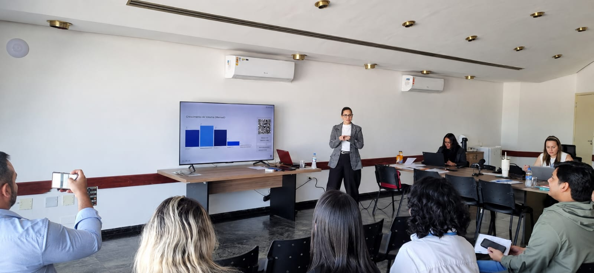
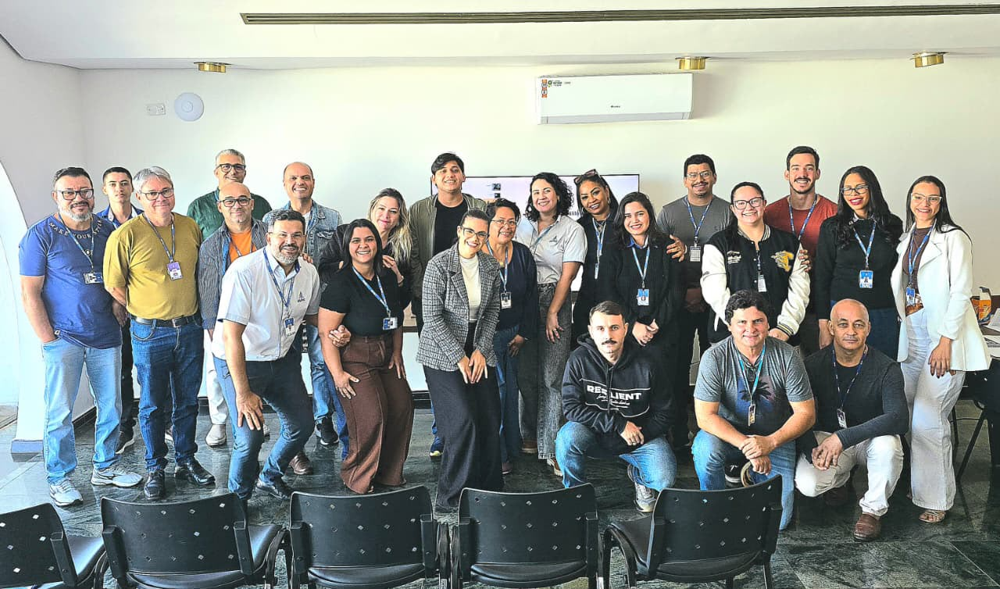
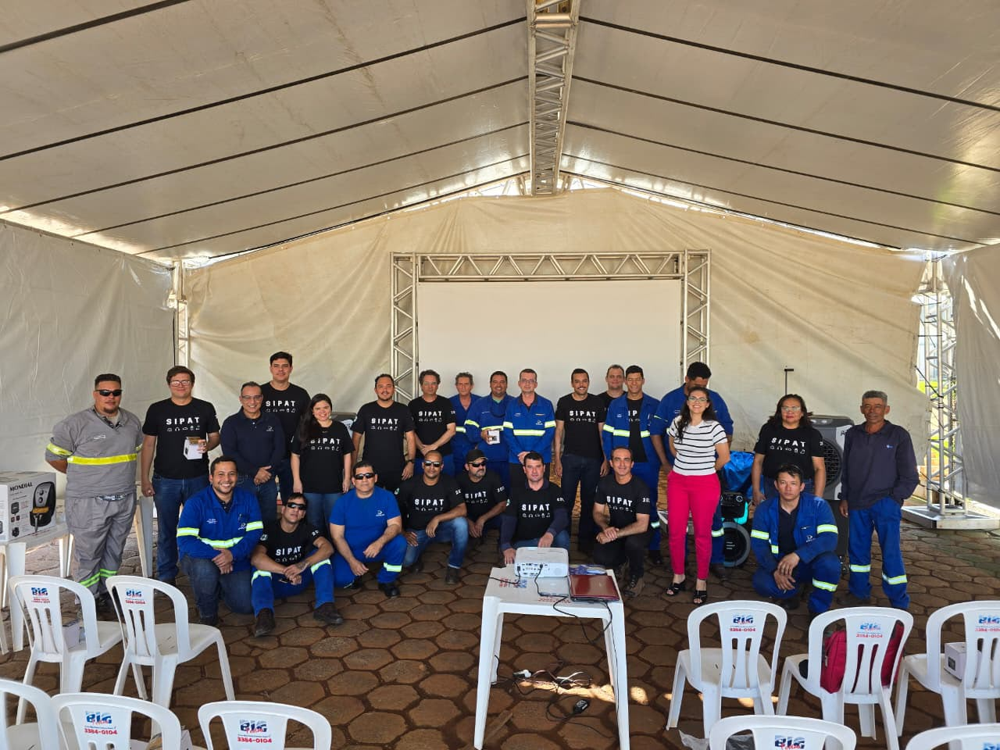

Nossa Galeria de Fotos



Quando a saúde psicológica é negligenciada, os impactos não ficam restritos ao bem-estar dos colaboradores. Eles podem alcançar a produtividade, a liderança, o clima organizacional e até os resultados financeiros da empresa.
Um ambiente marcado por pressão excessiva, comunicação inadequada, conflitos constantes e falta de suporte pode gerar um ciclo silencioso de desgaste. Aos poucos, aquilo que parecia apenas um problema individual começa a afetar toda a organização.
Queda de produtividade: colaboradores emocionalmente sobrecarregados podem apresentar dificuldade de concentração, tomada de decisão e execução das atividades.
Aumento de conflitos: falhas na comunicação e relações profissionais desgastadas podem comprometer a colaboração entre equipes e prejudicar o ambiente de trabalho.
Rotatividade de profissionais (Turnover): ambientes pouco saudáveis podem aumentar a insatisfação e contribuir para a perda de talentos importantes para a organização.
Afastamentos e absenteísmo: quando os sinais de desgaste são ignorados, o impacto pode aparecer no aumento de faltas, afastamentos e indisponibilidade dos profissionais.
Erros e perda de eficiência (Presenteísmo): o excesso de estresse e a sobrecarga mental podem comprometer a atenção, a qualidade das decisões e a execução de tarefas.
Desgaste das lideranças: gestores também estão sujeitos à pressão. Sem preparo e suporte adequado, podem surgir dificuldades para conduzir equipes, administrar conflitos e tomar decisões.
Deterioração do clima organizacional: quando problemas psicológicos e relacionais são tratados de maneira inadequada, a confiança, o engajamento e o sentimento de pertencimento podem diminuir.
O maior perigo é que esses problemas raramente aparecem de uma única vez. Eles costumam começar com pequenos sinais que, quando ignorados, tornam-se problemas cada vez maiores e mais difíceis de corrigir.
Cuidar da saúde psicológica da empresa não é apenas cuidar de pessoas. É proteger a operação, fortalecer as equipes, desenvolver lideranças e preservar resultados.
Verifique o quão preparada sua empresa está hoje.


